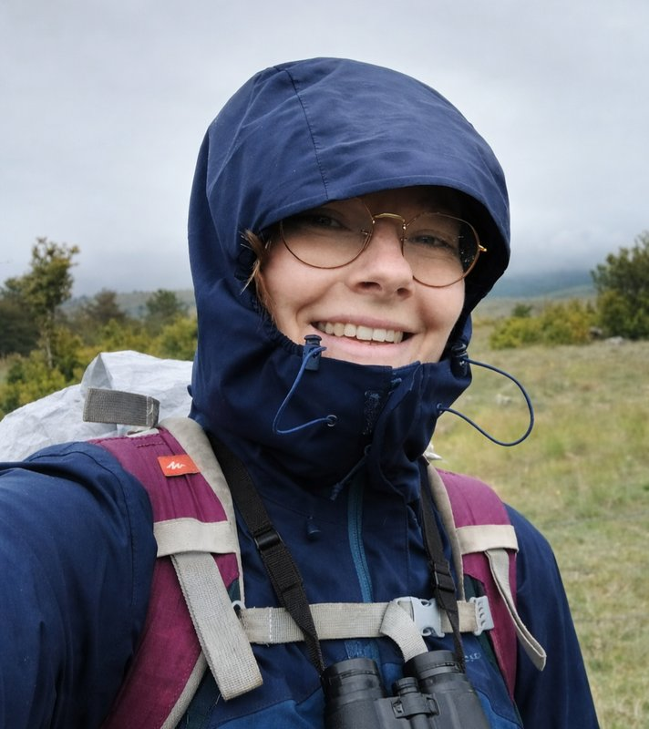

À propos

Avant tout, une passion
Aussi loin que je me souvienne, j'ai toujours voulu travailler avec les animaux. Petite, je rêvais d'être vétérinaire. En grandissant, c'est l'observation du comportement animal qui m'a captivée : comprendre pourquoi un animal agit comme il le fait, ce que cela révèle de son environnement, de son évolution.
Ce fil conducteur m'a menée de l'équitation aux écuries de mon adolescence jusqu'à une thèse de doctorat sur la trompe des éléphants au Muséum national d'Histoire naturelle. Entre les deux, il y a eu des taupes, des mésanges, des lamantins, et du terrain — dans les Pyrénées, en parc zoologique et au Cambodge.
Rester connectée au vivant
En dehors du labo, je continue à observer. Randonnées, sorties naturalistes, engagement associatif — la curiosité pour le monde vivant ne s'arrête pas à la porte du bureau. J'ai été bénévole auprès de plusieurs associations naturalistes et de conservation (CNER, BIBOP, Vienne Nature, Le Chêne), et j'aime autant identifier un oiseau en balade que décortiquer un jeu de données.
Les voyages nourrissent aussi cette curiosité : chaque nouveau paysage est une occasion de découvrir d'autres écosystèmes, d'autres façons de cohabiter avec la faune.
Et maintenant ?
Après trois ans de thèse et des années à explorer la recherche académique, j'ai envie de nouveaux défis. Mon parcours m'a donné des bases solides — rigueur scientifique, travail de terrain, communication, pédagogie — et je suis curieuse de les appliquer dans de nouveaux contextes. La biodiversité reste au cœur de mes préoccupations, mais je suis ouverte à explorer des domaines que je ne connais pas encore.
Si mon profil vous intéresse ou si vous avez envie d'échanger, n'hésitez pas à me contacter.